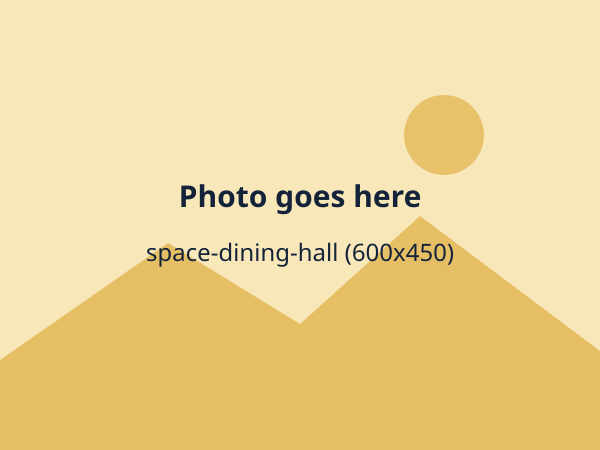

Inter-house sports day
Four houses competed in track and field, football and a spirited tug of war.
Select a date to read what changed. These dates are placeholders until the school adds its own.
St. Francis High School opens in Namagoma with its first S.1 class.
The first dormitories open and the school welcomes its first boarders.
A purpose-built library gives students a quiet place to read and study.
Networked computers arrive for ICT lessons and the coding club.
S.5 and S.6 classes begin, adding the sixth form to the school.
Four ideas shape every lesson, from S.1 to S.6.
Labs, projects and field trips make ideas real. Students remember what they have tried for themselves.
The library, debate and class discussion teach students to read widely, ask questions and argue well.
Prefects, houses and clubs give every student a chance to lead and serve.
The computer lab and digital tools support research, coding and revision, never replacing the teacher.
Every student gets a chance to lead, and everyone gets a vote.
Students think about what they could offer their class or school.
Students put themselves or a friend forward.
Candidates give a one-minute talk to the class or assembly.
Everyone votes in a real polling booth with a paper ballot.
New leaders receive their badges at assembly.
We are always glad to hear from teachers, laboratory technicians, librarians and boarding staff. Send us a message and tell us about yourself.
Day scholars and boarders learn, play and eat together. Boarders have a home on campus, and everyone belongs to a house.
Join assembly at 7:30 and go home after games at 17:00, with school bus routes available.
Dormitories, supervised prep, weekend activities and visiting days, with wardens and matrons on duty.

Nothing matters more than students being safe, happy and looked after.
Our students give time and ideas to the people around them.
Students visit nearby homes and schools and help with local projects.
Every class helps look after the school surroundings and the neighbourhood twice a year.
Parents and teachers run the open day, the book drive and fundraising for the library.
Two parts: what is coming up, and what we have already done.
Meet the teachers, tour the library and computer lab and see the dormitories.
Experiments, projects and coding demos from every class.
Four houses compete for the trophy in the school hall.
Awards for academics, sport and character, with families invited.
A dinner and dance to celebrate the S.4 and S.6 classes.
New S.1 students and boarders arrive and meet their houses.
Four houses competed in track and field, football and a spirited tug of war.
A tense semi-final ended with a last-minute goal.
Doctors, engineers, teachers and entrepreneurs spoke to students about their careers.
A march, songs and a quiz on the story of Uganda's independence.
Music, dance, comedy and poetry from every dormitory.
Our S.5 and S.6 speakers go through to the next round.
Students donated books and joined a reading challenge, with prizes for each house.
S.2 and S.3 students showed their first programs and robots.
A welcome party hosted by the four houses, with music and games.
The choir, band and dance troupe performed for families.
No events match. Clear the search or choose All.
This term students have debated, coded and cheered for their houses. The best days are the ones when a student tells me what they discovered and what they will do with it. Decisions make you, so we help every student make good ones.
Joseph Ssemakula, Headteacher
S.1 to S.6: O-Level in S.1 to S.4 and A-Level in S.5 and S.6.
Yes. Day and boarding places are available in every class.
Yes. A smart, comfortable uniform and a sports kit. Boarders also bring bedding and personal items from the requirements list.
Through a termly newsletter, report cards, parent-teacher days and calls from class teachers and wardens.